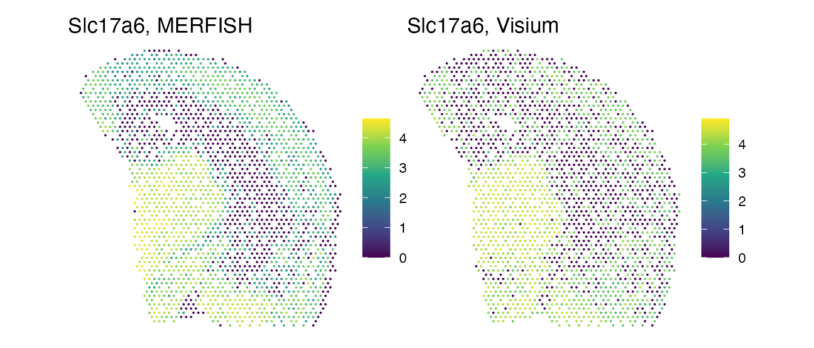
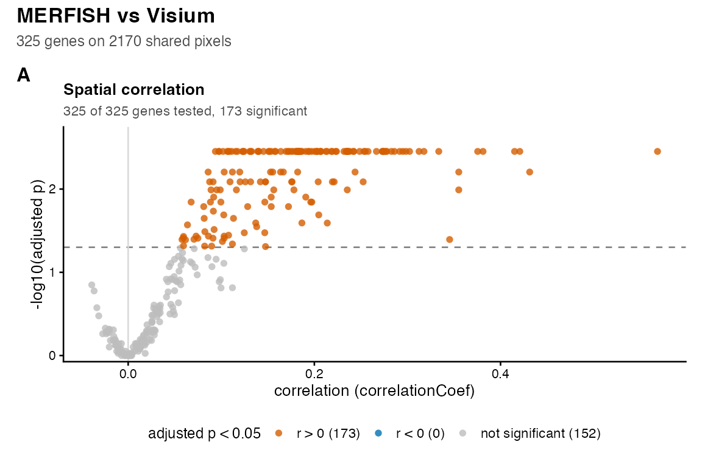
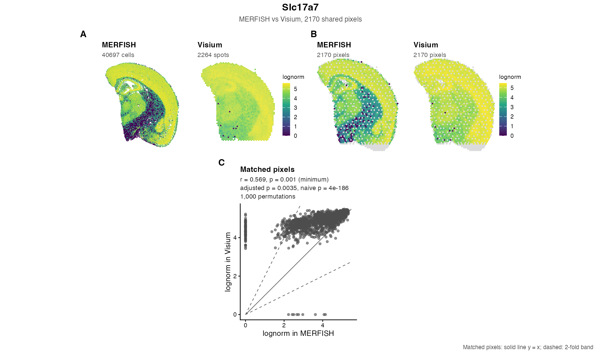
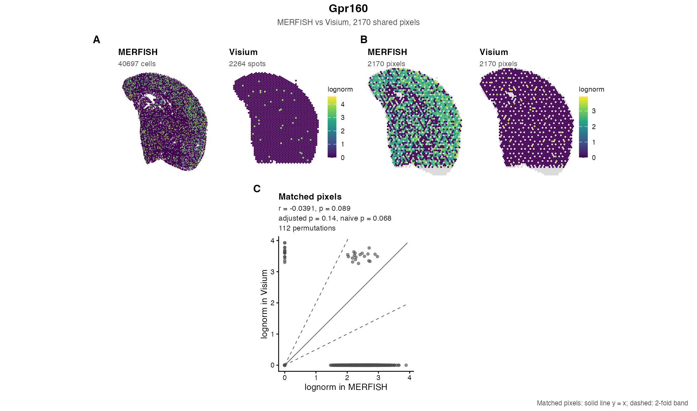
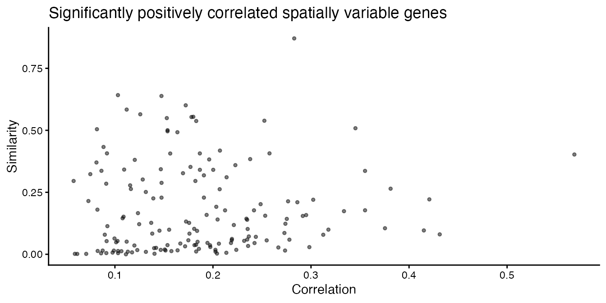
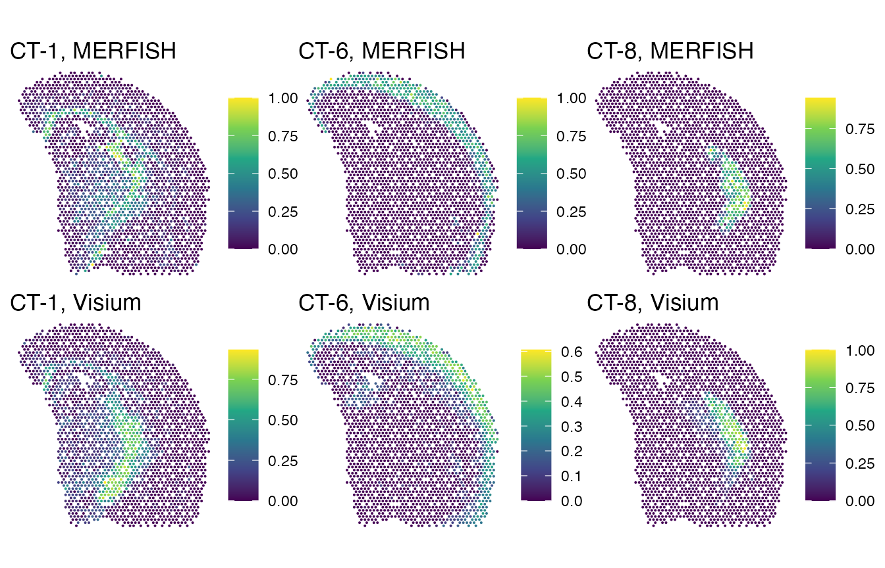
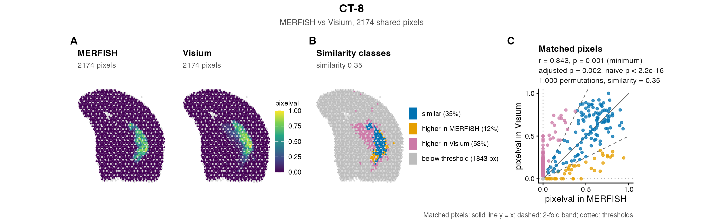

Comparison of MERFISH and Visium for mouse brain
Kalen Clifton
Vivien Jiang
Jean Fan
Source:vignettes/articles/brain-MERFISH-10x-visium.Rmd
brain-MERFISH-10x-visium.RmdThis case study compares two sections of the adult mouse brain assayed with two different technologies: MERFISH, which measures a targeted panel of genes in single cells, and 10x Visium, which measures the whole transcriptome in spots of 55 µm. The sections come from different animals and were aligned with STalign. We ask how well the spatial patterns of gene expression, and of cell types, correspond across the two technologies.
The analysis runs live. It downloads 75 MB once (the files are cached for later runs), and takes about two minutes on a computer with 8 cores.
library(STcompare)
library(SpatialExperiment)
library(ggplot2)
library(patchwork)
# use up to 8 threads, leaving one core free
threads <- min(8L, max(1L, parallel::detectCores() - 1L, na.rm = TRUE))Reading the Visium scale factors needs the package jsonlite.
Download the data
The MERFISH data, slice 2 replicate 3 aligned to the Visium section, are on Zenodo (doi:10.5281/zenodo.10724029), the Visium data on the 10x Genomics website, and the cell-type annotations of both on Zenodo (doi:10.5281/zenodo.19582556). The helper below downloads a file once into a cache directory and checks its MD5 checksum, so a broken or partial download is never used.
cacheDir <- file.path(tools::R_user_dir("STcompare", which = "cache"),
"downloads")
downloadCached <- function(url, file, md5) {
dir.create(cacheDir, recursive = TRUE, showWarnings = FALSE)
path <- file.path(cacheDir, file)
if (file.exists(path) && unname(tools::md5sum(path)) == md5) return(path)
old <- options(timeout = max(1800, getOption("timeout")))
on.exit(options(old))
partial <- paste0(path, ".part")
utils::download.file(url, partial, mode = "wb", quiet = TRUE)
if (unname(tools::md5sum(partial)) != md5) {
unlink(partial)
stop("The download of ", file, " is incomplete or has changed ",
"(MD5 mismatch); please try again.", call. = FALSE)
}
file.rename(partial, path)
path
}
tenx <- paste0("https://cf.10xgenomics.com/samples/spatial-exp/1.3.0/",
"Visium_FFPE_Mouse_Brain/")
celltypes <- "https://zenodo.org/records/19582556/files/"
files <- list(
merfish = downloadCached(
"https://zenodo.org/records/10724029/files/STalign_S2R3_to_Visium.csv.gz?download=1",
"STalign_S2R3_to_Visium.csv.gz", "c092af84ca82a50539f4fdc0f51e8fdc"),
visium_counts = downloadCached(
paste0(tenx, "Visium_FFPE_Mouse_Brain_filtered_feature_bc_matrix.tar.gz"),
"Visium_FFPE_Mouse_Brain_filtered_feature_bc_matrix.tar.gz",
"017fc078b4aa21e1df39027d0bf3ccad"),
visium_spatial = downloadCached(
paste0(tenx, "Visium_FFPE_Mouse_Brain_spatial.tar.gz"),
"Visium_FFPE_Mouse_Brain_spatial.tar.gz", "a78bb08009c4defd791354dd5c292bfa"),
type_similarity = downloadCached(
paste0(celltypes, "STalign_cell_type_transcriptional_correlations.csv.gz?download=1"),
"STalign_cell_type_transcriptional_correlations.csv.gz",
"f2a4dc1997ed8ba2344094d534ff64fd"),
merfish_types = downloadCached(
paste0(celltypes, "STalign_S2R3_cell_type_annotations.csv.gz?download=1"),
"STalign_S2R3_cell_type_annotations.csv.gz", "085e49b9bb8f0693d5854d2013b351dc"),
visium_types = downloadCached(
paste0(celltypes, "STalign_Visium_cell_type_annotations.csv.gz?download=1"),
"STalign_Visium_cell_type_annotations.csv.gz", "897985b732e45a7b4dbee3a64cd357e8"))The cache is tools::R_user_dir("STcompare", "cache");
set the environment variable R_USER_CACHE_DIR to move it,
or delete the directory to free the space.
MERFISH
The MERFISH table has one row per cell: its original position, its
position aligned to the Visium section (STalign_x,
STalign_y), the probability that STalign matched it to the
Visium section (Pmatch), and the counts of the gene panel.
We keep the cells matched with high confidence and rotate the section by
90 degrees to the usual orientation.
merfish <- read.csv(files$merfish, row.names = 1)
dim(merfish)
#> [1] 85958 654
names(merfish)[1:8]
#> [1] "center_x" "center_y" "STalign_y" "STalign_x" "Pmatch" "Oxgr1"
#> [7] "Htr1a" "Htr1b"
matched <- merfish$Pmatch > 0.95
merfishCounts <- t(as.matrix(merfish[matched, -(1:5)]))
merfishXY <- cbind(x = merfish$STalign_x[matched],
y = -merfish$STalign_y[matched])
rownames(merfishXY) <- colnames(merfishCounts)
dim(merfishCounts)
#> [1] 649 40697Visium
The Visium counts come as a Matrix Market file and the spot positions, in pixels of the full-resolution image, as a table. We convert the positions to the pixels of the high-resolution image, the frame of the STalign alignment, and apply the same rotation.
visiumDir <- tempfile("visium-")
untar(files$visium_counts, exdir = visiumDir)
untar(files$visium_spatial, exdir = visiumDir,
files = c("spatial/tissue_positions_list.csv",
"spatial/scalefactors_json.json"))
mtx <- file.path(visiumDir, "filtered_feature_bc_matrix")
visiumCounts <- methods::as(Matrix::readMM(file.path(mtx, "matrix.mtx.gz")),
"CsparseMatrix")
features <- read.delim(file.path(mtx, "features.tsv.gz"), header = FALSE)
barcodes <- readLines(file.path(mtx, "barcodes.tsv.gz"))
dimnames(visiumCounts) <- list(make.unique(features$V2), barcodes)
# columns: barcode, in_tissue, array_row, array_col, pixel row, pixel column
positions <- read.csv(file.path(visiumDir, "spatial", "tissue_positions_list.csv"),
header = FALSE, row.names = 1)
scale <- jsonlite::fromJSON(file.path(visiumDir, "spatial",
"scalefactors_json.json"))$tissue_hires_scalef
visiumXY <- cbind(x = positions[barcodes, 5], y = -positions[barcodes, 4]) * scale
rownames(visiumXY) <- barcodes
dim(visiumCounts)
#> [1] 19465 2264Normalize and rasterize both technologies together
Only the genes measured by both technologies can be compared. To control for the different detection efficiencies, each cell or spot is normalized by its total counts over these genes, to counts per million (CPM).
genes <- intersect(rownames(visiumCounts), rownames(merfishCounts))
length(genes)
#> [1] 466
cpm <- function(m) Matrix::t(Matrix::t(m) / Matrix::colSums(m)) * 1e6
merfishSpe <- SpatialExperiment(
assays = list(CPM = cpm(Matrix::Matrix(merfishCounts[genes, ], sparse = TRUE))),
spatialCoords = merfishXY)
visiumSpe <- SpatialExperiment(assays = list(CPM = cpm(visiumCounts[genes, ])),
spatialCoords = visiumXY)Cells and spots are then aggregated, in one call,
onto a shared grid of hexagonal pixels with fun = "mean".
The resolution, 20 pixels of the high-resolution image, is about 80 µm,
a little more than a Visium spot (55 µm across, 100 µm apart), so that a
pixel holds about one spot and many cells. The assay
pixelval holds the mean CPM of each pixel; for the
correlation, we also compute its logarithm, as in the published
analysis.
rast <- SEraster::rasterizeGeneExpression(
list(MERFISH = merfishSpe, Visium = visiumSpe),
assay_name = "CPM", resolution = 20, fun = "mean", square = FALSE)
for (s in names(rast)) {
assay(rast[[s]], "lognorm") <- log10(assay(rast[[s]], "pixelval") + 1)
}
sapply(rast, ncol)
#> MERFISH Visium
#> 2627 2204
sapply(rast, function(r) median(r$num_cell))
#> MERFISH Visium
#> 15 1Genes that are rarely detected cannot be compared, and a gene with no expression in one technology cannot be tested. We keep the genes detected in more than 1% of the pixels of both technologies:
detected <- sapply(rast, function(r) Matrix::rowMeans(assay(r, "pixelval") > 0))
analysed <- rownames(detected)[detected[, "MERFISH"] > 0.01 &
detected[, "Visium"] > 0.01]
length(analysed)
#> [1] 325To look at the pixels shared by both technologies, we draw each pixel
as a point at its centre (SEraster::plotRaster() draws the
hexagons, which is better suited to fewer, larger pixels). For example,
Slc17a6 has a similar pattern in both technologies:
shared <- intersect(colnames(rast$MERFISH), colnames(rast$Visium))
plotPixels <- function(spe, feature, title, assay = "lognorm") {
values <- data.frame(spatialCoords(spe),
value = as.numeric(assay(spe, assay)[feature, ]))
ggplot(values, aes(x, y, colour = value)) +
geom_point(size = 0.4, shape = 16) +
coord_equal() +
scale_colour_viridis_c(name = NULL) +
labs(title = title) +
theme_void()
}
plotPixels(rast$MERFISH[, shared], "Slc17a6", "Slc17a6, MERFISH") +
plotPixels(rast$Visium[, shared], "Slc17a6", "Slc17a6, Visium")
Spatially variable genes
We expect genes with a spatial pattern in both technologies to be positively correlated, and genes without a pattern not to be. The published analysis classified the genes with Moran’s I, as implemented in the GitHub package MERINGUE:
# Not run: needs remotes::install_github("JEFworks-Lab/MERINGUE")
moransI <- function(mat, coords, filterDist) {
w <- MERINGUE::getSpatialNeighbors(coords, filterDist = filterDist)
I <- MERINGUE::getSpatialPatterns(mat, w)
MERINGUE::filterSpatialPatterns(mat = mat, I = I, w = w, adjustPv = TRUE,
alpha = 0.05, minPercentCells = 0.01)
}
# MERFISH: log10(CPM + 1) of the pixels; Visium: CPM of the spots
merfishI <- moransI(assay(rast$MERFISH, "lognorm")[analysed, ],
spatialCoords(rast$MERFISH), filterDist = 21)
visiumI <- moransI(assay(visiumSpe, "CPM"), spatialCoords(visiumSpe),
filterDist = 25)
svgGenes <- intersect(rownames(merfishI), rownames(visiumI))STcompare ships the resulting list, so that this tutorial needs no GitHub-only dependencies: the 230 of the 325 genes that are spatially variable in both technologies.
svgGenes <- scan(system.file("extdata", "vignette-brain-svg-genes.txt",
package = "STcompare"),
what = "", comment.char = "#", quiet = TRUE)
length(svgGenes)
#> [1] 230
nonSvgGenes <- setdiff(analysed, svgGenes)
length(nonSvgGenes)
#> [1] 95Spatial correlation of genes across technologies
We run the spatial correlation test on the log-transformed values. As
in the other case study, nPermutations = 1000 keeps the run
time short; see Parameters,
performance and reproducibility for the trade-off.
res <- compareSpatial(rast, assay = "lognorm", genes = analysed,
tests = "correlation", nPermutations = 1000,
nThreads = threads)
#> compareSpatial: for 25 of 325 genes (deltaGridEdge), more than half of the permutations of x or of y chose the smallest (0.01) or the largest (0.9) delta: the best smoothing may lie outside the grid; consider extending delta
#> compareSpatial: 325 genes on 2170 shared pixels in 58.4 s (171.0k permutations in total, 8 threads)
res
#> STcompareResult: 325 genes on 2170 shared pixels; MERFISH vs Visium (assay lognorm)
#> Correlation: adaptive permutation p-values (stop at 10 exceedances, at most 1000 permutations); 11 deltas from 0.01 to 0.9; rank-remapped surrogates
#> pValuePermuteAdj < 0.05: 173 genes (173 with correlationCoef > 0, 0 with correlationCoef < 0)
#> stopped early: 181; reached nPermutations: 144; skipped: 0; failed: 0
#>
#> gene nPixels correlationCoef pValueNaive pValuePermuteX pValuePermuteY
#> Oprk1 2170 0.1843 4.97e-18 0.000999 0.000999
#> Npbwr1 2170 0.0442 3.97e-02 0.054726 0.044776
#> Adgrb3 2170 0.0817 1.40e-04 0.007992 0.009990
#> Gpr45 2170 0.0429 4.56e-02 0.098901 0.120879
#> Fzd7 2170 -0.0203 3.44e-01 0.733333 0.600000
#> Nrp2 2170 0.2213 1.77e-25 0.002997 0.001998
#> pValuePermute pValuePermuteAdj nPermutations stop deltaStarMedianX
#> 0.000999 0.00353 1000 limit 0.10
#> 0.050000 0.08553 200 exceedances 0.01
#> 0.009990 0.02248 1000 limit 0.05
#> 0.111111 0.17196 90 exceedances 0.05
#> 0.714286 0.78960 14 exceedances 0.20
#> 0.002997 0.00819 1000 limit 0.10
#> deltaStarMedianY deltaGridEdge status message
#> 0.10 FALSE ok
#> 0.10 TRUE ok
#> 0.10 FALSE ok
#> 0.40 FALSE ok
#> 0.45 FALSE ok
#> 0.40 FALSE ok
#> ... and 319 more rowsWith the default rank-remapped surrogates,
compareSpatial() skips only genes that are constant in a
sample: none of the analysed genes is constant in a technology, so all
of them are tested. That includes the 28 genes detected in fewer than
= 47 of the
= 2170 shared pixels of a technology, most of them rarely detected by
Visium (for example Adgrg5, Gpr150, Cysltr2): the correlation of such a
gene is decided by a few pixels, and the surrogates of the legacy
functions (surrogate = "gaussian"), whose values are nearly
normal, would give it a p-value that is far too small, so that mode
skips these genes (minDetected); the remapped surrogates
have the gene’s own values and give calibrated p-values (see How
STcompare works). The message about deltaGridEdge says
that for some genes, most surrogates chose the smallest (0.01) or the
largest smoothing bandwidth of the grid. Their p-values are still valid,
but the surrogates may match their spatial autocorrelation less well; a
wider grid (delta) would test that.
plotOverview() draws the correlation of every gene
against its adjusted permutation p-value, with the significant genes
coloured by the sign of their correlation (only the correlation was
tested here, so the figure has this one panel). The genes along the top
reached the floor of the permutations, 1/1001.
plotOverview(res)
tab <- as.data.frame(res)
tab$svg <- ifelse(tab$gene %in% svgGenes, "spatially variable",
"not spatially variable")
table(tab$svg, tab$status)
#>
#> ok
#> not spatially variable 95
#> spatially variable 230
tab <- tab[tab$status == "ok", ]
tab$significant <- tab$pValuePermuteAdj < 0.05
table(tab$svg, ifelse(tab$significant,
ifelse(tab$correlationCoef > 0, "positive", "negative"),
"not significant"))
#>
#> not significant positive
#> not spatially variable 81 14
#> spatially variable 71 159159 of 230 (69%) tested spatially variable genes are significantly positively correlated between MERFISH and Visium, and none is significantly negatively correlated. 81 of 95 (85%) tested genes without a spatial pattern are not significantly correlated, as expected. The correspondence of the patterns is lower than between two MERFISH replicates (93% of spatially variable genes in the paper), most likely because of the different sensitivities of the two technologies and the different tissue preservation (fresh frozen for MERFISH, FFPE for Visium) rather than a poor alignment.
Two examples: the spatially variable gene with the strongest
correlation, and the gene without a spatial pattern with the lowest
correlation among those that are not significant.
plotGene() draws the standard figure of a gene from the
result and the rasterized objects; with native, it also
maps the gene in the MERFISH cells and the Visium spots (A, B), on the
same log scale as the pixels (C, D), followed by the values at the
shared pixels with the gene’s statistics (E). The result has no
similarity (only the correlation was tested), so the figure has no
similarity panel and the scatter plot is plain. The light grey hexagons
in C and D are pixels that one technology lacks (the Visium spots are
sparser than the hexagons, so some hexagons hold no spot); the tests
used only the shared pixels.
svgPositive <- tab[tab$svg == "spatially variable" & tab$significant &
tab$correlationCoef > 0, ]
geneSig <- svgPositive$gene[which.max(svgPositive$correlationCoef)]
nonSvgNotSig <- tab[tab$svg == "not spatially variable" & !tab$significant, ]
geneNotSig <- nonSvgNotSig$gene[which.min(nonSvgNotSig$correlationCoef)]
c(geneSig, geneNotSig)
#> [1] "Slc17a7" "Gpr160"
# log10(CPM + 1) of the cells and spots, for the native maps (log1p() keeps a
# sparse matrix sparse)
assay(merfishSpe, "lognorm") <- log1p(assay(merfishSpe, "CPM")) / log(10)
assay(visiumSpe, "lognorm") <- log1p(assay(visiumSpe, "CPM")) / log(10)
plotGene(res, geneSig, rast$MERFISH, rast$Visium,
native = list(merfishSpe, visiumSpe), nativeAssay = "lognorm",
nativeUnit = c("cells", "spots"))
plotGene(res, geneNotSig, rast$MERFISH, rast$Visium,
native = list(merfishSpe, visiumSpe), nativeAssay = "lognorm",
nativeUnit = c("cells", "spots"))
Similarity of the levels
The similarity asks whether the two technologies measure similar
levels at the same pixels. It compares fold changes, so we compute it on
the CPM (pixelval), a linear scale; on log-transformed
values, the ratio of two values is not a fold change. The similarity
test needs no permutations.
sim <- compareSpatial(rast, assay = "pixelval", genes = analysed,
tests = "similarity", verbose = FALSE)
tab$percentSimilarity <- sim[tab$gene, "percentSimilarity"]
summary(tab$percentSimilarity)
#> Min. 1st Qu. Median Mean 3rd Qu. Max.
#> 0.000000 0.006923 0.051557 0.123672 0.179971 0.870698
ggplot(subset(tab, svg == "spatially variable" & significant),
aes(correlationCoef, percentSimilarity)) +
geom_point(alpha = 0.5, size = 1) +
labs(x = "Correlation", y = "Similarity",
title = "Significantly positively correlated spatially variable genes") +
theme_classic()
Even for genes whose patterns agree, the levels at matched pixels often differ more than two-fold (the median similarity of these genes is 0.12): the two technologies capture each gene with a different efficiency, so the fraction of a pixel’s counts that a gene gets differs between them even after normalization. Correlation, which ignores the levels, is the appropriate test to compare technologies; similarity is more useful for samples assayed in the same way.
Cell types
While sensitivity to individual genes differs between technologies, the underlying cell types should be the same. In the STalign paper (Clifton et al. 2023), the MERFISH cells were clustered into cell types and the Visium spots deconvolved into proportions of cell types, and the two sets of cell types were matched by their transcriptional similarity:
typeSimilarity <- as.matrix(read.csv(files$type_similarity, row.names = 1,
check.names = FALSE))
colnames(typeSimilarity) <- rownames(typeSimilarity)
merfishTypes <- read.csv(files$merfish_types, row.names = 1)
visiumTypes <- as.matrix(read.csv(files$visium_types, row.names = 1,
check.names = FALSE))
colnames(visiumTypes) <- rownames(typeSimilarity)
# cell types whose best transcriptional match is mutual
best <- rownames(typeSimilarity)[
diag(typeSimilarity) == apply(typeSimilarity, 1, max) &
diag(typeSimilarity) == apply(typeSimilarity, 2, max)]
best
#> [1] "CT-1" "CT-6" "CT-8" "CT-9" "CT-10" "CT-11" "CT-12" "CT-13" "CT-16"To compare where the cell types are, each cell type becomes a row of
an assay: a one-hot encoding of the MERFISH cells’ labels, and the
deconvolved proportions of the Visium spots. Rasterized together with
fun = "mean", the pixels hold the proportion of each cell
type.
labelled <- intersect(colnames(merfishSpe), rownames(merfishTypes))
labels <- factor(merfishTypes[labelled, "x"], levels = rownames(typeSimilarity))
oneHot <- t(sapply(levels(labels), function(type) as.numeric(labels == type)))
colnames(oneHot) <- labelled
rastTypes <- SEraster::rasterizeGeneExpression(
list(MERFISH = SpatialExperiment(assays = list(proportion = oneHot),
spatialCoords = merfishXY[labelled, ]),
Visium = SpatialExperiment(assays = list(proportion = t(visiumTypes)),
spatialCoords = visiumXY[rownames(visiumTypes), ])),
assay_name = "proportion", resolution = 20, fun = "mean", square = FALSE)
sharedTypes <- intersect(colnames(rastTypes$MERFISH),
colnames(rastTypes$Visium))
typeMaps <- lapply(names(rastTypes), function(s) {
lapply(head(best, 3), function(type) {
plotPixels(rastTypes[[s]][, sharedTypes], type, paste0(type, ", ", s),
assay = "pixelval")
})
})
wrap_plots(unlist(typeMaps, recursive = FALSE), nrow = 2)
The proportions are on a linear scale, so both tests apply:
resTypes <- compareSpatial(rastTypes, nPermutations = 1000, nThreads = threads)
#> compareSpatial: for 2 of 16 genes (deltaGridEdge), more than half of the permutations of x or of y chose the smallest (0.01) or the largest (0.9) delta: the best smoothing may lie outside the grid; consider extending delta
#> compareSpatial: 16 genes on 2174 shared pixels in 3.6 s (11.1k permutations in total, 8 threads)
tabTypes <- as.data.frame(resTypes)
tabTypes$matched <- tabTypes$gene %in% best
tabTypes[order(-tabTypes$matched, tabTypes$pValuePermute),
c("gene", "matched", "correlationCoef", "pValuePermuteAdj",
"nPermutations", "percentSimilarity")]
#> gene matched correlationCoef pValuePermuteAdj nPermutations
#> CT-1 CT-1 TRUE 0.57827969 0.001998002 1000
#> CT-6 CT-6 TRUE 0.80283459 0.001998002 1000
#> CT-8 CT-8 TRUE 0.84347977 0.001998002 1000
#> CT-9 CT-9 TRUE 0.73423202 0.001998002 1000
#> CT-10 CT-10 TRUE 0.73173825 0.001998002 1000
#> CT-12 CT-12 TRUE 0.81682985 0.001998002 1000
#> CT-13 CT-13 TRUE 0.79846677 0.001998002 1000
#> CT-11 CT-11 TRUE 0.13537949 0.004795205 1000
#> CT-16 CT-16 TRUE 0.75875445 0.004795205 1000
#> CT-3 CT-3 FALSE 0.24041770 0.001998002 1000
#> CT-5 CT-5 FALSE 0.28635523 0.024992190 582
#> CT-7 CT-7 FALSE 0.21271728 0.027100271 492
#> CT-15 CT-15 FALSE -0.05478407 0.586080586 21
#> CT-14 CT-14 FALSE 0.01447967 0.761904762 15
#> CT-2 CT-2 FALSE 0.01666981 0.761904762 14
#> CT-4 CT-4 FALSE 0.01927060 0.909090909 11
#> percentSimilarity
#> CT-1 0.331540013
#> CT-6 0.387339056
#> CT-8 0.347432024
#> CT-9 0.337209302
#> CT-10 0.345847554
#> CT-12 0.360000000
#> CT-13 0.193460490
#> CT-11 0.063492063
#> CT-16 NA
#> CT-3 0.021151586
#> CT-5 0.221407625
#> CT-7 0.197406340
#> CT-15 0.003784295
#> CT-14 0.110782866
#> CT-2 0.020447284
#> CT-4 0.059190031All 9 cell types with a mutual transcriptional match are significantly positively correlated between the technologies: their spatial patterns correspond, even though the patterns of many individual genes do not. They include CT-16, which MERFISH labels in only 28 of the 2174 shared pixels (r = 0.76, adjusted p = 0.0048): the surrogates take the cell type’s own values, so a type confined to few pixels gets a calibrated p-value instead of being skipped (see How STcompare works).
The proportions were compared with both tests, so the standard figure of a cell type has the similarity panel too. For the matched cell type with the strongest correlation:
bestType <- matched$gene[which.max(matched$correlationCoef)]
plotGene(resTypes, bestType, rastTypes$MERFISH, rastTypes$Visium)
CT-8 occupies the same region in both technologies (r = 0.84), but its proportions at matched pixels are within two-fold in only 35% of the pixels where either technology finds it: the proportions of the MERFISH labels and of the Visium deconvolution differ even where they agree on the pattern.
Session information
sessionInfo()
#> R version 4.6.1 (2026-06-24)
#> Platform: aarch64-apple-darwin23
#> Running under: macOS Sonoma 14.5
#>
#> Matrix products: default
#> BLAS: /Library/Frameworks/R.framework/Versions/4.6/Resources/lib/libRblas.0.dylib
#> LAPACK: /Library/Frameworks/R.framework/Versions/4.6/Resources/lib/libRlapack.dylib; LAPACK version 3.12.1
#>
#> locale:
#> [1] en_US/en_US/en_US/C/en_US/en_US
#>
#> time zone: America/New_York
#> tzcode source: internal
#>
#> attached base packages:
#> [1] stats4 stats graphics grDevices utils datasets methods
#> [8] base
#>
#> other attached packages:
#> [1] patchwork_1.3.2 ggplot2_4.0.3
#> [3] SpatialExperiment_1.22.0 SingleCellExperiment_1.34.0
#> [5] SummarizedExperiment_1.42.0 Biobase_2.72.0
#> [7] GenomicRanges_1.64.0 Seqinfo_1.2.0
#> [9] IRanges_2.46.0 S4Vectors_0.50.3
#> [11] BiocGenerics_0.58.1 generics_0.1.4
#> [13] MatrixGenerics_1.24.0 matrixStats_1.5.0
#> [15] STcompare_2.0.0
#>
#> loaded via a namespace (and not attached):
#> [1] gtable_0.3.6 rjson_0.2.23 xfun_0.62
#> [4] bslib_0.12.0 htmlwidgets_1.6.4 lattice_0.23-1
#> [7] vctrs_0.7.3 tools_4.6.1 parallel_4.6.1
#> [10] proxy_0.4-29 tibble_3.3.1 pkgconfig_2.0.3
#> [13] KernSmooth_2.23-27 Matrix_1.7-6 rearrr_0.3.5
#> [16] RColorBrewer_1.1-3 S7_0.2.2 desc_1.4.3
#> [19] lifecycle_1.0.5 compiler_4.6.1 farver_2.1.2
#> [22] textshaping_1.0.5 codetools_0.2-20 class_7.3-24
#> [25] htmltools_0.5.9 sass_0.4.10 yaml_2.3.12
#> [28] pillar_1.11.1 pkgdown_2.2.1 jquerylib_0.1.4
#> [31] classInt_0.4-11 BiocParallel_1.46.0 cachem_1.1.0
#> [34] DelayedArray_0.38.2 magick_2.9.1 abind_1.4-8
#> [37] tidyselect_1.2.1 digest_0.6.39 sf_1.1-3
#> [40] dplyr_1.2.1 labeling_0.4.3 fastmap_1.2.0
#> [43] grid_4.6.1 cli_3.6.6 SparseArray_1.12.3
#> [46] magrittr_2.0.5 S4Arrays_1.12.1 e1071_1.7-17
#> [49] withr_3.0.3 scales_1.4.0 rmarkdown_2.32
#> [52] XVector_0.52.0 otel_0.2.0 ragg_1.5.2
#> [55] evaluate_1.0.5 knitr_1.52 viridisLite_0.4.3
#> [58] SEraster_1.4.0 rlang_1.3.0 Rcpp_1.1.2
#> [61] glue_1.8.1 DBI_1.3.0 jsonlite_2.0.0
#> [64] R6_2.6.1 units_1.0-1 systemfonts_1.3.2
#> [67] fs_2.1.0